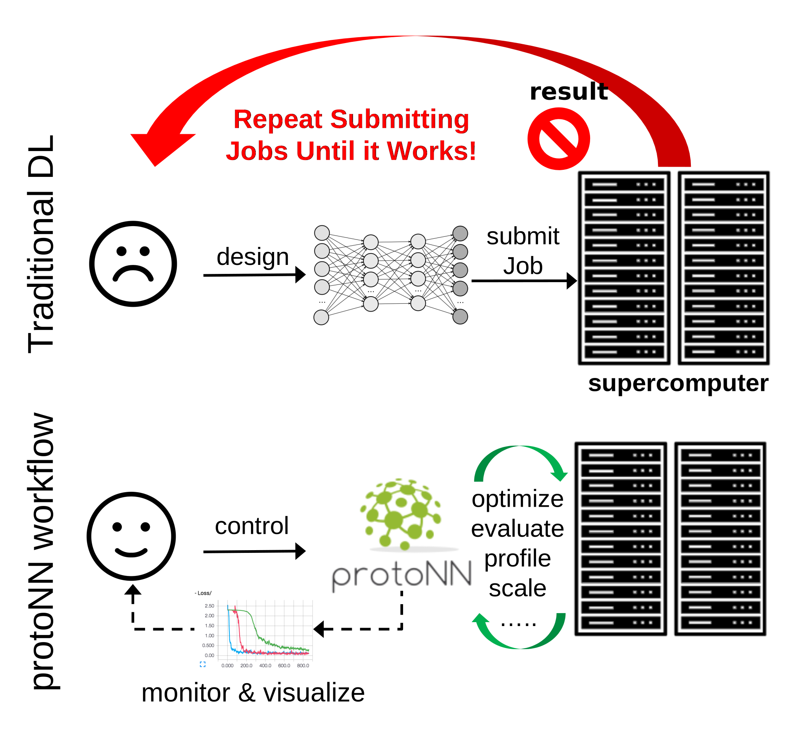

<!--
.. title: protoNN
.. slug: index
.. date: 2018-06-01 09:39:34 UTC
.. tags:
.. category:
.. link:
.. description: Developing neural networks made easy
.. type: text
.. hidetitle: True
.. author: protoNN team
-->

    <header class="masthead text-center d-flex">
      <div class="container my-auto">
        <div class="row">
          <div class="col-sm- mx-auto">
            <h1>
              <strong><strong>protoNN</strong>: a framework for code-agnostic, interactive prototyping of DNNs</strong>
            </h1>
          </div>
        </div>
      </div>
    </header>


    <section class="bg-primary">
      <div class="container h-100">
        <div class="row">
          <div class="col-6 mx-auto text-center">
            <h2 class="section-heading text-white">Tracking metadata and injecting parameters</h2>
            <br />
            <p class="text-white"> protoNN uses Python type hints to specify which parameters need to be tracked or modified</p>
          </div>
          <div class="col-6 mx-auto text-center">
            {{% listing track.py python linenumbers=True %}}
          </div>
        </div>
      </div>
    </section>


    <section>
      <div class="container h-100">
        <div class="row align-items-center h-100">
          <div class="col-6 text-center mx-auto ">
            <h2 class="section-heading">Transparent and elastic scheduling of DNN training jobs on modern HPC systems</h2>
          </div>
          <div class="col-6 mx-auto text-center">
            
          </div>
        </div>
      </div>
    </section>


    <section class="bg-primary" id="about">
      <div class="container">
        <div class="row">
          <div class="col-12 mx-auto">
            <h2 class="section-heading text-white">More features:</h2>
  
            <ul class="text-white">
                <li> Monitoring and visualizing model parameters and computational performance statistics.</li>
                <li> Perform semi-automatic hyperparameter tuning/optimization and architecture search using evolutionary algorithms.</li>
                <li> A user-defined interactive interface to drive the framework/ design process, not bound to any particular framework.</li>
                <li> Scaling the functionality and performance of the model as the resources increase. </li>
            </ul>

          </div>
        </div>
      </div>


